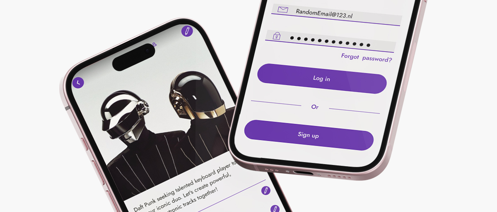
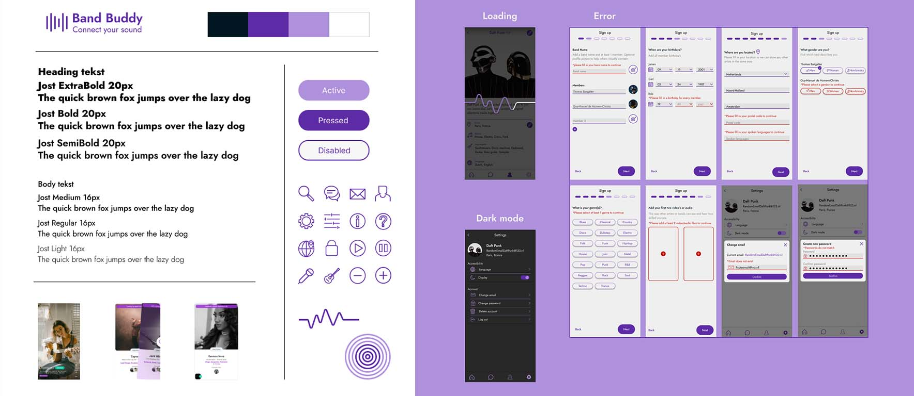
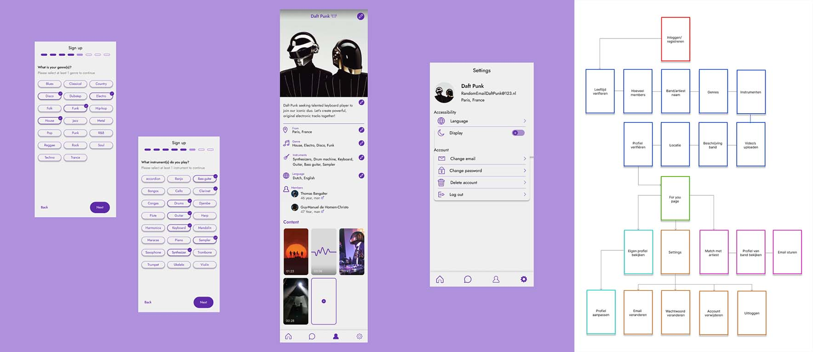
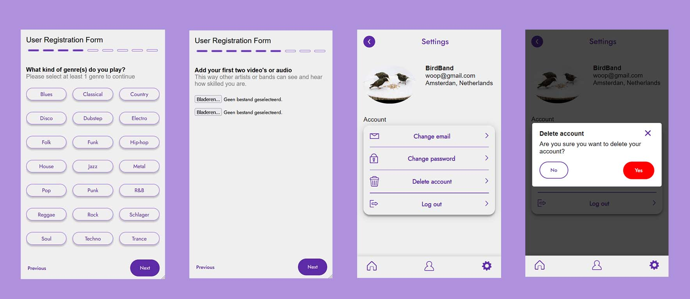

For this project, I collaborated with a team of four to design and build BandBuddy, a fully functional web application developed over 10 weeks. The concept was a matching platform, but we gave it a unique twist: a tool that connects local musicians looking for bandmates, jam partners, or collaborators.
Development Progress

Initial Design
In the initial phase, I worked closely with another front-end
developer to research various matching apps. We analyzed their
strengths and weaknesses, identifying key bad, good, and best
practices to apply to our design.
Based on our findings, we created moodboards and a styleboard
to define BandBuddy's visual identity. We also developed
a user persona representing our target audience, which guided
our design choices.
To plan the app's structure, we created a wireflow
mapping out the necessary pages and user flows. With these
insights, we created initial sketches, experimenting with
layouts, color combinations, and interactive elements, while
ensuring the app supported dark mode and multiple languages.

Development
In the development phase, I was responsible for coding the
last five registration pages, as well as the profile, settings
and chat pages. In the root of the project, we set up reusable
components for colors and text.
Additionally, I worked with the other front-end developer to
design various states, where I was responsible for the 404 and
completed states.
I was also in charge of setting up and maintaining the
styleboard, ensuring visual consistency across the app.
Additionally, I kept the wireflow updated to visualize the
app's structure and user flow.
Results

Due to time constraints, we couldn't implement some features like chat, 404/completed states, and a fully working dark mode (though we created a sketch for it). The core features are live:
- Create profiles, set preferences, find nearby users
- "For You" page for swiping and connecting
- Upload media and edit profile (auto-saved)
- Option to delete profile
- Clean, consistent and user-friendly UI
Reflections
This project taught me to prioritize features under tight
deadlines. While some functions were left out, the app still
achieves its main goal and is fully usable. I gained hands-on
experience with full-stack development, especially in database
integration. Design decisions were mostly self-directed.
I applied strategies like competitor research,
building a persona, and creating a moodboard, styleboard, and
wireflow. These steps helped speed up the process. In future
projects, I aim to improve time management to deliver a more
complete product.